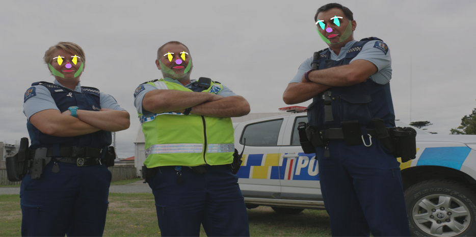
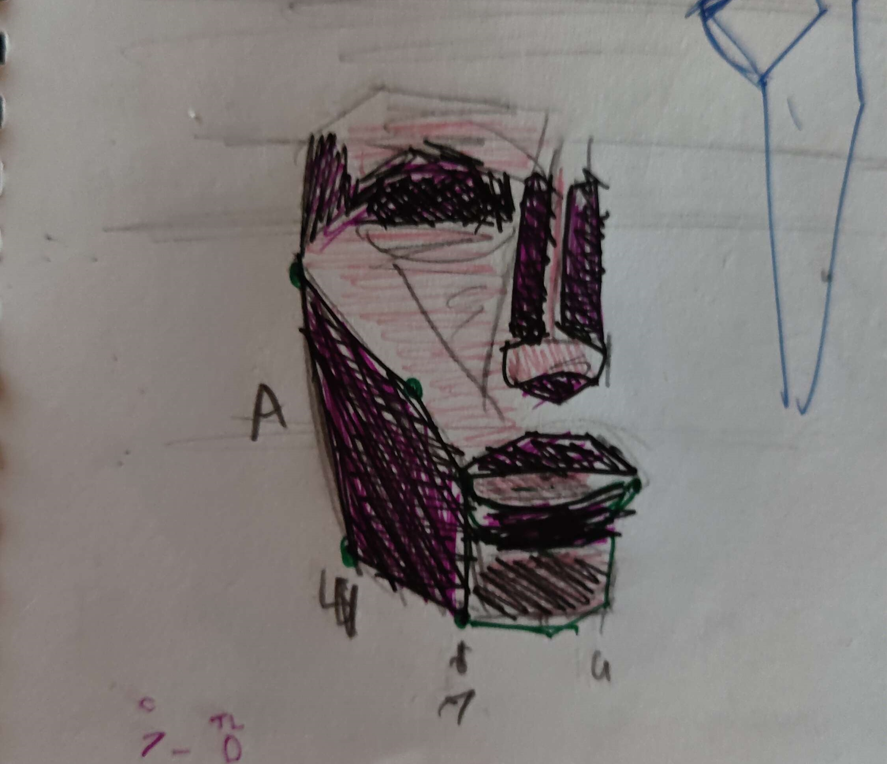
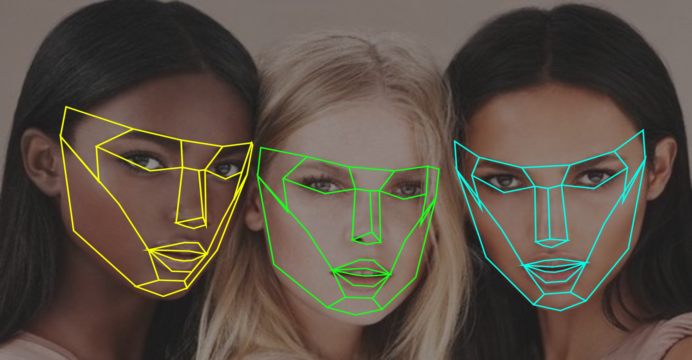
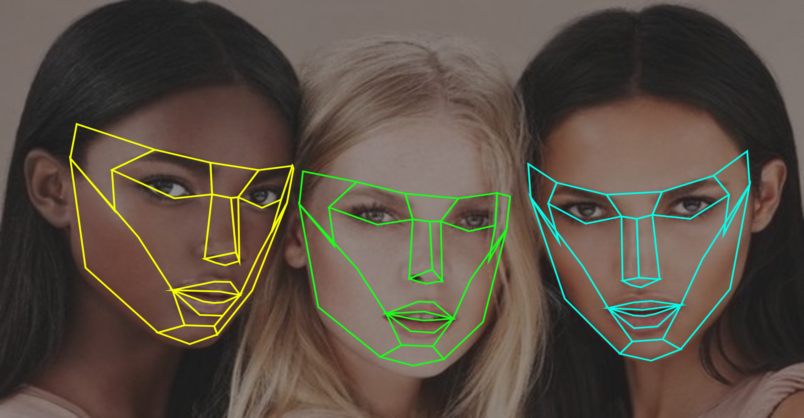

MDDN342
The goal of this assignment was to create a system that maps attributes of the face, and expresses the extrinsic and intrinsic values using machine learning. It will act as a sort of filter, and use real world data in real time to project onto a “photobooth” type of application, using the webcam.
When I started this assignment I had one idea in my mind, and that was this sketching guide. I saw the opportunity to try and make something that is actually useful to someone, and something even I could use.
I ended up being a bit too pedantic and ambitious with how I wanted it to look, and it ended up causing me to fall behind. I had wanted to originally make it look like an actual sketched face, and be quick and messy looking. I soon realised that purposefully trying to make something look imperfect on purpose within this code space would be very very difficult. I knew that I was running out of time with this idea, and I didn’t want to finish this idea and leave it half done, so I ended up making a quick adjustment and turning it into a clown filter. I did this as a social commentary on the New Zealand police, and the different colours of the different parts of the face represented different values, like skin colour, hair colour, if they were smiling or not, etc.
After I had finished with my uni work for the year, I decided I wanted to try and fix it up to fit more inline with my first vision. I tried to simplify the idea, and think about what would actually be important. It ended up coming down to the face structure, so I had decided to just put baselines down. I drew up a sketch on how I wanted it to look, how I thought it would be helpful. It ended up looking slightly scary to me, but I actually quite liked it.
After analysing my sketch a bit, I discovered that I really liked the harsher and more straight lines. The stylised angles really caught me, so I spent some time trying to figure out how I would adjust my previous work to my new and improved idea. I had to swap out my curveVertexes to regular vertexes, and I had to map out very specific points. I used a function given to me by a lecturer to find the average point between two of the already existing points. This ended up being the golden answer, and really made my design pop. I then changed the AI to map the colour of the models skin, and change the colour of the guidelines.
Red = Dark
Yellow = Medium
Cyan = Tan
Green = Pale


Overall, compared to how I first did this, I am very happy with this outcome. I really think that this is a very helpful tool for people, and definitely for me. I would really like to develop this a lot further eventually, and make it very advanced at tracking landmarks of the face, and maybe think about involving it in AR.
 

giiitthhuuubbbb